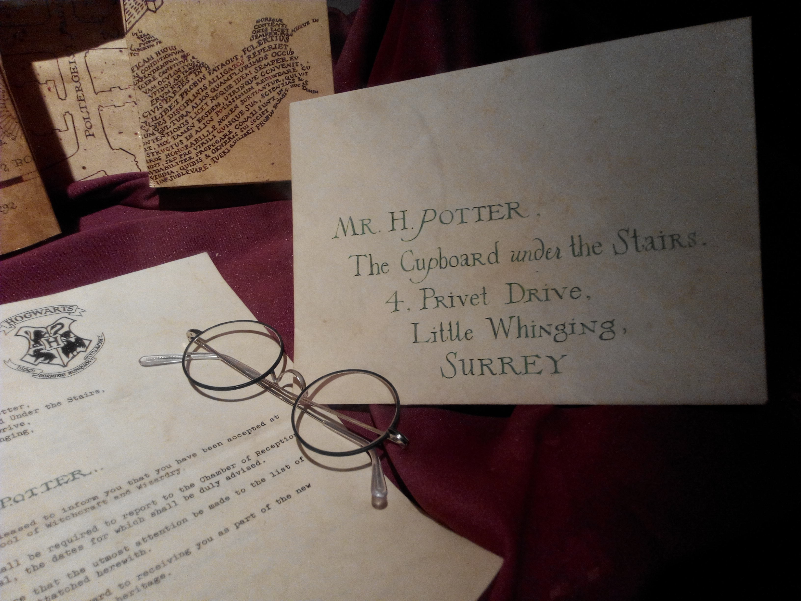

Harry James Potter (b. 31 July 1980) was an English half-blood wizard, and one of the most famous wizards of modern times. He was the only child and son of James and Lily Potter (née Evans), both members of the original Order of the Phoenix. Harry's birth was overshadowed by a prophecy, naming either himself or Neville Longbottom as the one with the power to vanquish Lord Voldemort. After half of the prophecy was reported to Voldemort, courtesy of Severus Snape, Harry was chosen as the target due to his many similarities with the Dark Lord. In turn, this caused the Potter family to go into hiding. Voldemort made his first vain attempt to circumvent the prophecy when Harry was a year and three months old. During this attempt, he murdered Harry's parents as they tried to protect him, but this unsuccessful attempt to kill Harry led to Voldemort's first downfall. This downfall marked the end of the First Wizarding War, and to Harry henceforth being known as the "Boy Who Lived", as he was the only known survivor of the Killing Curse.
On his eleventh birthday, Harry learned that he was a wizard, from Rubeus Hagrid. He began attending Hogwarts School of Witchcraft and Wizardry in 1991. The Sorting Hat was initially going to Sort Harry into Slytherin House, but Harry pleaded 'not Slytherin' and the Hat heeded this plea, instead sorting the young wizard into Gryffindor House. At school, Harry became best friends with Ron Weasley and Hermione Granger. He later became the youngest Quidditch Seeker in over a century and eventually the captain of the Gryffindor House Quidditch Team in his sixth year, winning two Quidditch Cups. He became even better known in his early years for protecting the Philosopher's Stone from Voldemort, saving Ron's sister Ginny Weasley, solving the mystery of the Chamber of Secrets, slaying Salazar Slytherin's basilisk, and learning how to conjure a corporeal stag Patronus at the age of thirteen. In his fourth year, Harry won the Triwizard Tournament, although the competition ended with the tragic death of Cedric Diggory and the return of Lord Voldemort. During the next school year, Harry reluctantly taught and led Dumbledore's Army. He also fought in the Battle of the Department of Mysteries, during which he lost his godfather, Sirius Black.
Harry played a significant role in many other battles of the Second Wizarding War. He, Ron, and Hermione hunted down and destroyed Voldemort's Horcruxes. During the Battle of Hogwarts, Harry personally saw the deaths of Severus Snape and Fred Weasley while learning that Remus Lupin, Nymphadora Tonks, Colin Creevey, and many others had fallen in battle as well. He encountered Voldemort and nearly sacrificed himself, knowing that his doing so was the only way to destroy the fragment of Voldemort's soul inside of him. In limbo, after Voldemort cursed him in the forest clearing, Albus Dumbledore gave Harry advice and background information on the Dark Lord. When told he could choose to live or to "move on", Harry chose to live. After he awoke, Harry confronted Voldemort and defeated him once and for all.